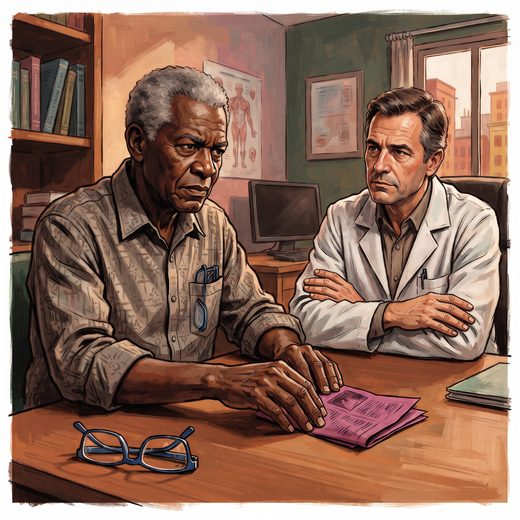

Consulta rápida à beira do leito
Condutas, doses e interações.
Referências da aula · 5
- Jack CR Jr, Andrews JS, Beach TG, et al. Revised criteria for diagnosis and staging of Alzheimer’s disease: Alzheimer’s Association Workgroup. Alzheimers Dement. 2024;20(8):5143-69. PMID 38934362. doi:10.1002/alz.13859.PubMedDOI
- Dubois B, Villain N, Schneider L, et al. Alzheimer disease as a clinical-biological construct: an International Working Group recommendation. JAMA Neurol. 2024;81(12):1304-11. PMID 39483064. doi:10.1001/jamaneurol.2024.3770.PubMedDOI
- Serrano-Pozo A, Escott-Price V, Grinberg LT, et al. Alzheimer’s disease. Lancet. 2026;407:2241-62. PMID 42208565. doi:10.1016/S0140-6736(26)00198-4.PubMedDOI
- Livingston G, Huntley J, Liu KY, et al. Dementia prevention, intervention, and care: 2024 report of the Lancet standing Commission. Lancet. 2024;404(10452):572-628. PMID 39096926. doi:10.1016/S0140-6736(24)01296-0.PubMedDOI
- Sperling RA, Aisen PS, Beckett LA, et al. Toward defining the preclinical stages of Alzheimer’s disease: recommendations from the National Institute on Aging-Alzheimer’s Association workgroups on diagnostic guidelines for Alzheimer’s disease. Alzheimers Dement. 2011;7(3):280-92. PMID 21514248. doi:10.1016/j.jalz.2011.03.003.PubMedDOI
Documentos oficiais
Leis e publicações do Ministério da Saúde sobre o cuidado da pessoa idosa, de acesso livre.
Abrir os documentos